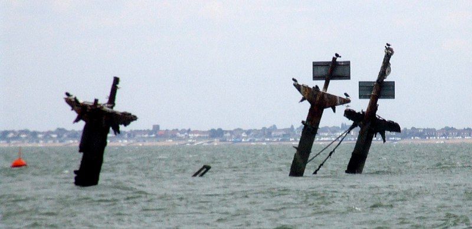
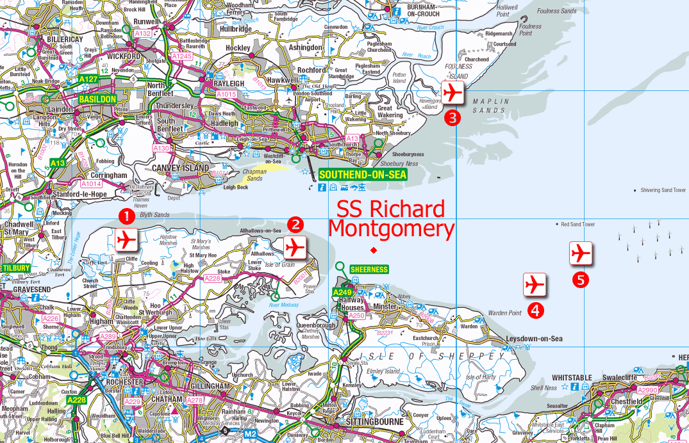
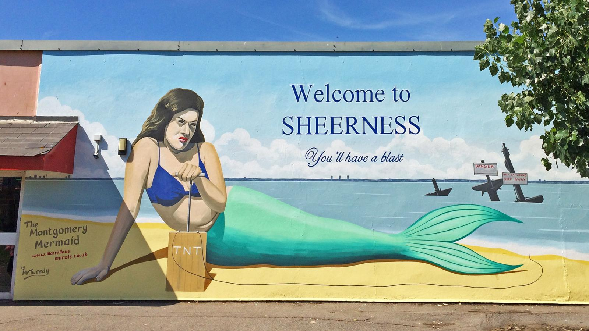

Unexploded Bombs
 Masts of the SS Richard Montgomery. Photo by Clem Rutter, Rochester, Kent CC BY
I'd like to introduce you to the SS Richard Montgomery. For those who don't know the story already, it's quite extraordinary.
Towards the end of WWII, a Liberty Ship, the SS Richard Montgomery, ran aground on shifting sands just off the coast of Sheerness at the mouth of the Thames Estuary. She was loaded with over 6,000 tonnes of high-explosive bombs and detonators. Salvage operations managed to remove some of the explosives, but before the ship could be made safe it sank further and salvage was abandoned. The ship and her thousands of tonnes of remaining explosives was then left to sit for over 75 years. She is still there.
One of the most remarkable things about the wreck is her location. She lies in shallow water just 2.4 km from the seaside town of Sheerness. Not only that, but she is less than 200m from a busy shipping lane, and remarkably close to the Grain Liquid Natural Gas Terminal, the largest Liquified Natural Gas facility in Europe.
How dangerous is it?
WWII ordinance turns up every now and then during construction projects. Some unexploded WWII grenades were discovered while building an ice rink in my home town of Cambridge. The discovery triggered a visit from the bomb disposal squad and emergency services, alongside a limitation on flights in and out of Cambridge Airport until the grenades could be made safe.
But the amount of unexploded munitions here is in an entirely different category. There are no clear records of how much ordinance was left on the ship, but according to an official MCA report the ship likely contains more than 9000 explosives including cluster bombs and hundreds of giant 2,000lb 'blockbuster' bombs.It's hard to comprehend their explosive power should they go off.
A New Scientist investigation from 2004 suggests that spontaneous detonation of the entire cargo would hurl a column of debris up to 3 kilometres into the air, send a tsunami barrelling up the Thames and cause a shock wave that would damage buildings for miles around, including the liquid gas containers on the nearby Isle of Grain, which could detonate in turn.
What happens next?
 Suggested locations of new airport in Thames Estuary. By Ordnance Survey with modifications by Prioryman CC BY 3.0
Some demolition experts are content to let the wreck lie, hoping that time and tide will reduce the deadliness of her cargo. They argue that any attempt to clear the bombs from the wreck would be riskier than letting her lie. These arguments give the example of the explosion of the Kielce, a smaller munitions wreck which was more than 6km out to sea. A failed salvage operation there in 1967 set off an explosion that measured 4.5 on the Richter scale and damaged property in nearby Folkestone.
However, others disagree and argue that the wreck is actually becoming more dangerous over time. Phosphorous is now apparently leaking from the munitions aboard, evident as flames on the surface of the water where it burns in contact with air. These can sometimes be seen at night by local residents.
Another possibility is a collision. There have already been at least 22 near-misses where shipping traffic only just steered away from the exclusion zone around the wreck in time. One particularly harrowing episode occurred in May 1980 when a Danish chemical tanker, 'Mare Altum', steered aside only minutes before she would have impacted the Montgomery.
There have been persistent questions in Parliament asked about the subject. Recent surveys suggest that the condition of the wreck is rapidly deteriorating, which might lead to a sudden catastrophic collapse. Dave Welch, a former Royal Navy bomb disposal expert, who has advised the government on the SS Richard Montgomery's munitions, says:
"We can’t continue just leaving the wreck to fall apart. Somebody at some point in the next five to ten years is going to have a very difficult decision to make and I would say the sooner it’s made, the easier and cheaper it will be as a solution."
So far, no solution is in sight.
How does this relate to programming, anyway?
Every codebase has its unexploded bombs. Not so potentially serious as the SS Richard Montgomery, perhaps. But our code is out there driving all sorts of things in the real world. If we neglect potentially serious problems, we can harm people just as easily as other kinds of engineers.
Take your bug reports seriously
It can be too easy to dismiss user reports of bugs or accidental misuses of your application. Because we are so familiar with our own code, it can lead to a feeling of contempt for the person who doesn't approach the software in the same way that we do, or have as much knowledge about the underlying structure. And there is of course a natural feeling of defensiveness toward our own work. It can be humbling to find a bug in what you had hoped was well-crafted code, a blow to your ego and confidence as a programmer, perhaps.
This kind of misplaced confidence can be lethal. In the Therac-25 Incidents at least 6 cancer patients were given hundreds of times the desired dose of radiation therapy. This resulted in serious injuries and deaths. The malfunctions were reported early to the manufacturer, who sent engineers to a hospital where one of the lethal accidents occurred. They spent a day running the machine through tests but could not reproduce the critical malfuction, code 54, which only appeared when users typed with a certain fast frequency as experienced operators sometimes could. Because the error that caused the lethal bug was not observed by company investigators, they concluded it was "not possible for the Therac-25 to overdose a patient". It took another tragic accidental death to prove them wrong. This excellent analysis of the accidents dissects the timeline of events and has valuable lessons for us, particularly medical software developers.
We can be falsely confident about our code fixes, too, thinking that they resolve an issue when really they don't. It takes a particular critical, persistent mindset to debug a system well and really fix what the root of a problem was. The excellent rules of thumb in Dave Agans' 'Debugging' book are something I return to time and again when tackling software problems. I encourage you to print out the poster and put it on your wall! One of his key points is that until you can reliably trigger a bug, you don't know what the true cause is or whether a fix has addressed the bug or not. Intermittent faults which only appear under certain conditions, like the problems with Therac-25, can be the hardest things to address.
Listen to the voice of inexperience
Listen to newcomers - interns, new starters, people approaching a piece of the code they haven't worked on before. It's very easy to become habituated to a worrying situation - to live atop an unexploded bomb - and sometimes the only way to snap out of your ingrained habit of dismissing a problem is to listen to someone new worry about it.
I would argue that part of the onboarding process for programmers joining a new team should be to ask them what 'unexploded bombs' they might see in the code. There's usually a "and do you have any questions for us" stage in an internship check-in, for instance, but we rarely take the feedback we recieve this way seriously, or get enough detail to understand what about the codebase might be confusing or painful to work with.
Doing a 'Code Walk' structured walkthrough of the code can be very illuminating. (I highly recommend this talk by Mary Chester-Kadwell - it has really shaped the way I teach and learn about new codebases). In the process, pay attention to the questions your new team-mate asks and reflect on what they say about the health of the different parts of your codebase. Is there anything where when you explain it aloud, it seems convoluted and awkward, or counter-intuitive? Anywhere you particularly wish there was documentation to show your new recruit? Those places may be where problems are lurking.
Pay attention to the jokes
 Mural by Dean Tweedy made for the Promenade Arts Festival in 2015 - photo Andy Hebden
Matt Brown, chairman of Sheerness Enhancement Association for Leisure, condemned the mural in the local newspaper, saying:
"If I was a family visiting, whether I knew about the Montgomery or not, I wouldn’t want to be sitting at the leisure park with the kids being reminded you have those explosives out there."
The artist rebutted: "I wanted to make people aware of the Montgomery as it’s part of Sheerness. Some people would like to deny its existence."
The mermaid makes some local people uncomfortable because it reveals a truth about their town they'd rather not have to acknowledge - the ever-present danger to their lives from the offshore explosives. For a certain kind of authority figure, the reminder of a dangerous situation is worse than the actual danger, because without the reminder they can continue to live their lives without having to address the elephant in the room.
 This xkcd strip about data pipelines makes me laugh - but it also makes me think about the robustness of my code.
This xkcd strip about data pipelines makes me laugh - but it also makes me think about the robustness of my code.
Sometimes the equivalent of a Sheerness Mermaid Mural is the only way you can spot a problem that's become engrained in the way your code is put together. Is there a particular XKCD or Dilbert cartoon that seems to epitomise the bugs and problems you're encountering? Perhaps all the developers working on a particular part of the codebase have a set of in-jokes describing the way a certain class behaves itself? A kind of gallows humour about how a module is annoying to use, something that makes you cringe because it's a little too accurate?
These are all clues to what might be underlying dysfunctions of your code. By paying attention to them, you might be able to spot an unexploded bomb and defuse it, before your users discover it and blow things sky-high.